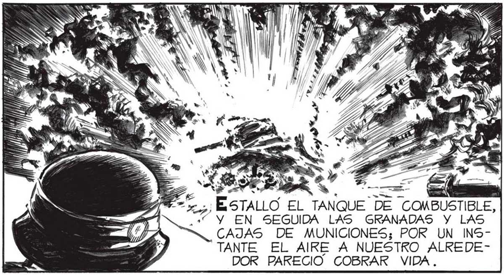
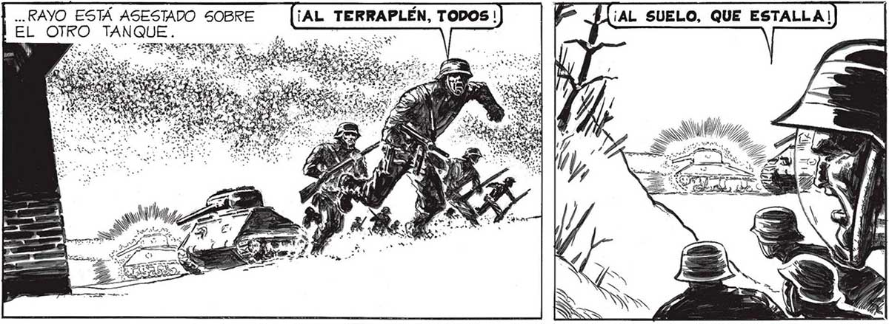
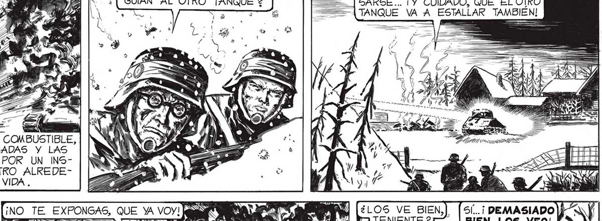
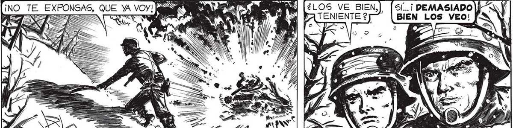

90 ¡SALGAMOS DE AQUÍ, TENIENTE ! ¡EN CUALQUIER INSTANTE VUELAN LOS RAPIDAMENTE EL COMBATE, SE CONVERTÍA EN DESASTRE. LOS DOS TANQUES ES TABAN INUTILIZADOS YA..¿QUÉ PODRÍAMOS HACER NOSOTROS, CON NUESTRAS ARMAS PATÉTICAMENTE DÉBILES, TOTALMENTE SUPERADAS POR AQUEL RAYO DE EFICACIA ESPANTOSA ? PENSAS AD lr: A SI, HABÍA QUE HUIR, HABIA QUE APROVECHAR QUE, POR EL MOMENTO, EL... — y. ESTALLO El TANQUE DE COMBUSTIBLE, +" Y EN SEGUIDA LAS GRANADAS Y LAS O CAJAS DE MUNICIONES; POR UN INSTANTE EL AIRE A NUESTRO ALREDEDOR PARECIO. COBRAR VIDA. MIENTRAS YO, QUE ERA EL JEFE DEL GRUPO, NO HACÍA OTRA COSA QUE ENCOGERME COMO UN CONEJO ASUSTADO, EL SE ! EXPONÍA AL PELIEIN GRO: ÉL NO OLA VIDABA, COMO YO, o Sa DE QUE ESTA + BAMOS ALLI MES [ O PARA COMBATIR o A OS AL ENEMIGO... LA voz DEL FUNDIDOR FUE COMO UNA SACUDIDA... .. RAYO ESTÁ ASESTADO SOBRE EL OTRO TANQU ¿Y LOS SOLDADOS QUE SEGUIAN AL OTRO TANQUE 2 ¡NO_TE_ EXPONGAS, QUE YA VOY! y E =P HE S > == CREO QUE CONSIGUIERON DISPER= SARSE... ¡Y CUIDADO, QUE EL OTRO 3 7 > ===A TANQUE VA A ESTALLAR TAMBIEN! PIN FA ' HATO | AA A a | Lan rre HE A EA INTTANES SUS 4 > 72 Y e Y a , xl e WE, POR PRIMERA VEZ PODÍA CONTEMPLAR A LOS DESPIADADOS INVASORES...



